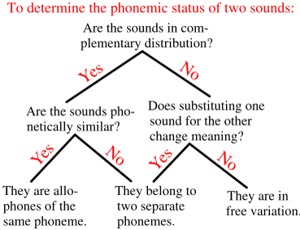

<!DOCTYPE html PUBLIC "-//W3C//DTD XHTML 1.0 Transitional//EN" "http://www.w3.org/TR/xhtml1/DTD/xhtml1-transitional.dtd">
<html xmlns="http://www.w3.org/1999/xhtml">

<!-- Mirrored from localhost/CS476CHERN/Current_projects.php by HTTrack Website Copier/3.x [XR&CO'2013], Fri, 09 Oct 2015 01:30:53 GMT -->
<head>
<meta http-equiv="Content-Type" content="text/html; charset=utf-8" />

<!--content here-->
<meta property="og:url"   content="http://www.cefns.nau.edu/~ngf4/CS476CHERN/" />
<meta property="og:image" content="../../www.cefns.nau.edu/_ngf4/naurobotics/pics/CHERN.html">
<meta property="og:title" content="PHONE AND PROSIDY" />


<!--Header--><!-- Mirrored from localhost/CS476CHERN/Current_projects.php by HTTrack Website Copier/3.x [XR&CO'2013], Fri, 09 Oct 2015 01:30:53 GMT --></html>
<html xmlns="http://www.w3.org/1999/xhtml">
<link rel="stylesheet" type="text/css" href="style.css">
</head>

<div id="pageholdframe">
<!--content here-->

<div id="navigationBar">
	<div id="menuArea">
		<!--This is a normal menu item with no sub items-->
		<div class="menuItem">
			<span><a href="index.html" class="header">Home</a></span>
		</div>                                        
		<div class="menuItem">
			<span class="header">Projects</span>
			<!--This is a menu item with sub items-->
			<div class="menuSubItems">
				<span><a href="Current_projects.html" class="header">Current Projects</a></span><br />
				<span><a href="Future_projects.html" class="header">Future Projects</a></span><br />
				<span><a href="Past_projects.html" class="header">Past Projects</a></span><br />
			</div>
		</div>                                       
		<div class="menuItem">
			<span><a href="Meeting_times.html" class="header">Meeting Times</a></span>
		</div>
	</div>
</div>


<br />
	
<!--content here-->

        <title>CHERN Team</title>
        <html xmlns="http://www.w3.org/1999/xhtml">
        <body>
		<!-- <link rel="shortcut icon" href="chern.png"> -->
        
        
        
        <center>
			<style>
			lumber{
			font-family: 'Voltaire';
			font-size: 50px;
			color: #ffffff;
			letter-spacing: 30px;
			text-transform: uppercase;
			}
			#lumbersome{
				height:auto;
				left: 172px;
				border:medium;
				margin-left: auto;
				margin-right: auto;
				background-color:#333333;
				padding:10px 10px;
				}
			</style>
			<div id="lumbersome">
			<lumber> Automatic Phone Recognizer </lumber>
			</div>
        </center>


<div id="Content">

<h1>Current Projects</h1>
<p>Phone Detection Software<br />
    <br />
    <br /><br />
    <strong id="docs-internal-guid-0f0a0d8a-4b56-14c5-f2ae-b346636ed773"></strong><br>
    <br />
    <strong>Description:</strong><br />
    The Applied Linguistics Speech Lab for Northern Arizona university is developing numerous programs to detect certain qualities of speech.
One of them being phones. Phones are even smaller than syllables in that they are the smallest units of utterance a mouth can achieve. Only about 60 phones exist
in the English language, which is much smaller than the millions of total words in the dictionary. At the moment, there exists open source word detection software
called KALDI ASR, which tries to detect words, rather than phones. It is the sponsor's belief that more accurate word detection software can be created by recognizing
phones first, and then building them up into words. The current project's goal is to simply recognize and output phones from speech files, so that it can be used to
implement the sponsor's hypothesis.<br />
<strong><br />
Requirements:</strong><br />
This project requires that the developers make software that can recognize and output phones from audio files.
<br>
<br>
<strong>Input:</strong><br>
Audio File
<br>
<br>
<strong>Output:</strong><br>
Text or string of consecutive phones
<br>
<br>
<strong>Deliverables:</strong>
<br>
MATLAB code<br>
Regular Progress Meetings<br>
User Manual<br>
Well Written Documentation<br />
<br />
<strong>
High-Level Design:</strong><br />We plan on using a Recurrent Neural Network to detect these phones. Unlike normal programs, Recurrent Neural Networks learn from exposure to
data and will eventually adapt to the requirements chosen. After sufficient training, we expect our network to work better than most phone detection
software.
<br />
<strong><br />
Schedule:</strong><br />
4 PM odd Tuesdays with Mentor<br />
4 PM even Tuesdays with Sponsor<br />
<strong><br />
Miscellaneous:</strong><br />
N/A<strong><br />
 <br />
 Tools:</strong><br />
 <a href="403.html">Main Document<br />
 Hannun 2014 DNN ASR</a><a href="docu/Hannun 2014 DNN ASR (2).pdf"><br />
 </a>MATLAB<br />
    <br />
    <strong>Meeting Minutes:</strong><br>
    <a href = "MeetingMinutes/ClientMeeting1.docx">Meeting 1</a><br>
    <a href = "MeetingMinutes/ClientMeeting2.docx">Meeting 2</a>
    <br />
    <br />
</div>

Last modified: October 08 2015 16:56:17.
<!--Footer-->


<!--content here-->
</div>
<center>
  <ul>
    <li><a href="index.html" class="background">Home</a></li>
	<li><a href="Meeting_times.html" class="background">Meet Us</a></li>
  </ul>
</center>


</body>
</html>


